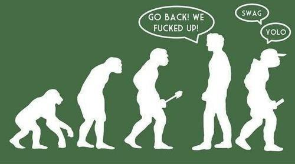

is an aspiring philosopher king, living the dream, travelling the world, hoarding FRNs and ignoring Americunts. He is a European at heart, lover of Latinas, and currently residing in the USA.


As I near the age when men traditionally begin families, I have become more pensive and observant. Many ideas that I once held have evolved, or sometimes completely reversed. After observing, discussing, experiencing, and researching various severe failings and perverse ideologies and the general depravity of Western liberal democracies, which are declared to be the pinnacle of civilization, I pose the question: Where are we headed, and what will the future look like?
We are at a very dangerous time. Between financial insolvency, moral weakness, social instability, destruction of the traditional family, and political corruption, the West is almost certainly facing decline, having outlived its period of dominance that most major civilizations pass through. If the West has not already crossed the Rubicon, then it is dangerously close to the point of no return.
While incremental marginal changes are possible, the hardest thing to change is the general trend, and the trend is for fewer freedoms, less economic opportunity, a weaker currency, a declining moral compass, more hypergamy, slut acceptance, and the pervasiveness of masculine, tattooed up, large, bossy women. It will be difficult, if not impossible to reverse these trends. However, let’s consider where we are heading.
Throughout the entirety of human history, women have formed one half of the family unit. As man became civilized, he developed rituals and rules and routines which typically involved taking a life partner, as many other species in nature do. While I’m not convinced that humans are 100% biologically hardwired to accept pair bonding, the entirety of history would support this idea. While there were always cases on the fringes of promiscuity, premarital sex, and infidelity, it was also the rule throughout much if not all of this history, that families consisted of a man at the helm, and a younger, smaller, virginal, and submissive woman, who became the bearer of children, provided and cared for the family, and supported the husband, and was sexually restricted to only that man.
With the majority of marriages failing, we are literally destroying these natural structures. Families are no longer possible for the majority of people in the west, at least not without trying multiple times and dealing with the financial, emotional, and psychological damage that comes with failed marriage, divorce, and a lack of permanent pair-bonding. If the trends of feminism continue, society faces a future with loud, shrill, fat, manly, neon colored, sexualized women full of shrapnel and graffiti. What does this mean?
If it feels good, do it
Imagine a world where sex is completely valueless. I don’t mean unenjoyable—biological and instinctual programming built in to every one of us guarantees some level of sex drive and a pleasurable outcome to orgasm. But imagine a world where there was no plane to sex other than physical stimulation. No emotional component. No mental challenge. No sense of personal connection or intimacy. No sense of discrimination or “specialness.” No love. Sex would be freely offered daily with the same amount of thought given to a head nod and hello when passing someone on the street.
Upon first glance, some of you would no doubt say this sounds like a good bargain. If sex became more easily attainable, men could stop being frustrated with women and all the games we engage in to try to receive some pleasure from them. But consider this more deeply. Look at the end game. Fast forward not one generation, or two, but ten or twenty.
Already it is a common practice for pre-teens to exchange sexual photos of their bodies, if not engage in full sexual acts before leaving middle school. In high school many girls learn basic sex skills and by college they are so free and loose with their bodies that they become physically aged and degraded, not to mention losing the ability to pair bond with a life partner.
If you meet a 25-year-old woman today, she has likely performed more degrading and perverse sex acts than a married woman of a generation or two prior completed in her entire lifetime. If we consider the cases of sexting, camwhoring, slutification, Dubai-whoring, pre-marital sex, lack of shame or self confidence, and project a few generations in the future, we have a very scary society.

Our future society, if it does not collapse, would likely have sexual intercourse offered so freely and easily that it would be rendered valueless. Remember, in 2016 women are already pulling out a telephone, swiping their finger across it a few times, and then waiting for a stranger to come over to their place and bang them. The ease and ubiquitousness of sex in the future will be orders of magnitude greater.
While this could be enjoyable in the short run, perhaps even for a number of years, where does this hollow and empty interaction lead? Women lose the ability to pair bond after taking multiple sexual partners. In the future, as girls become sexually used up, perhaps before even reaching their teenage years, and sex is reduced to a mere pleasure seeking action, ideas such as beauty, commitment, pride, and loyalty become meaningless for both sexes.
Why be loyal to a woman when you have a steady supply of vaginas? Why marry and commit to a man when it is more fun to focus on your career while hopping over the carousel?
Indeed, what do the sexes even mean at that point? Will we see an increase in trannies and gay sex and things that even today are too taboo? Bestiality? If it’s only about the physical orgasm, then it seems these would do the job as well. Forming a family will be impossible. Even today, the only thing keeping the majority of reproduction going is the hard-wired biological drive of women that encourages them to conceive.
The majority of new births are already out-of-wedlock bastards. If it wasn’t for this biological drive, forcing single women to desire to reproduce, there would be far, far fewer births in the minority of households that have a traditional marriage. If this trend continues, I predict either the biological drive will change (things like technology can supersede this hard-wired drive—indeed smart phones can be as addictive as drugs or sex), and human reproduction will come to a standstill, or we will see a replacement of the family as the basic social unit, as the single mother becomes the dominant social form. The latter would likely lead to a matriarchal system where the government, forced to provide things a husband typically would, must rely on the labors of men to obtain resources needed to replace the missing husbands.
This may sound like a crazy idea, or an unlikely scenario, but if one rationally considers where the end of the long road we are heading on will lead, it is not a pretty place. The bottom line is that if women do not have their actions and behaviors controlled by men, then it is no exaggeration to say that we are facing the end of civilized society. Masculinity is the natural state of affairs throughout history. We are only attempting to reset things to their natural order, before feminism literally turns us until animals again.